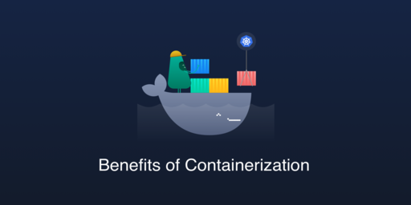

What is Containerization?
Containerization is the technique of bringing virtualization to the operating system level. While Virtualization brings abstraction to the hardware, Containerization brings abstraction to the operating system. Do note that Containerization is also a type of Virtualization. Containerization is however more efficient because there is no guest OS here and utilizes a host’s operating system, share relevant libraries & resources as and when needed unlike virtual machines. Application specific binaries and libraries of containers run on the host kernel, which makes processing and execution very fast. Even booting-up a container takes only a fraction of a second. Because all the containers share, host operating system and holds only the application related binaries & libraries. They are lightweight and faster than Virtual Machines.
Containerization allows developers to create and deploy applications faster and more securely. With traditional methods, code is developed in a specific computing environment which, when transferred to a new location, often results in bugs and errors. For example, when a developer transfers code from a desktop computer to a virtual machine (VM) or from a Linux to a Windows operating system. Containerization eliminates this problem by bundling the application code together with the related configuration files, libraries, and dependencies required for it to run. This single package of software or “container” is abstracted away from the host operating system, and hence, it stands alone and becomes portable—able to run across any platform or cloud, free of issues.
How Containers Work?
Containerization involves bundling an application together with all of its related configuration files, libraries and dependencies required for it to run in an efficient and bug-free way across different computing environments.

In containerization, containers hold all of the figurative nuts and bolts needed to run a program. This runtime environment could include files, libraries and environment variables that allow a program to be executable.
Because containers don’t require their own operating systems to execute applications, they consume fewer resources in a server, virtual or cloud environment. Apart from understanding the framework, it is also important to note the outcomes. An image is what results from the complete set of runtime components in a single container. And images are deployed by a container onto a chosen host.
Benefits of Containerization?
- Containerization offers significant benefits to developers and development teams. Among these
are the following:
- Portability: A container creates an executable package of software that is abstracted away from (not tied to or dependent upon) the host operating system, and hence, is portable and able to run uniformly and consistently across any platform or cloud.
- Agility: The open source Docker Engine for running containers started the industry standard for containers with simple developer tools and a universal packaging approach that works on both Linux and Windows operating systems. The container ecosystem has shifted to engines managed by the Open Container Initiative (OCI). Software developers can continue using agile or DevOps tools and processes for rapid application development and enhancement.
- Speed: Containers are often referred to as “lightweight,” meaning they share the machine’s operating system (OS) kernel and are not bogged down with this extra overhead. Not only does this drive higher server efficiencies, it also reduces server and licensing costs while speeding up start-times as there is no operating system to boot.
- Fault isolation: Each containerized application is isolated and operates independently of others. The failure of one container does not affect the continued operation of any other containers. Development teams can identify and correct any technical issues within one container without any downtime in other containers. Also, the container engine can leverage any OS security isolation techniques—such as SELinux access control—to isolate faults within containers.
- Efficiency: Software running in containerized environments shares the machine’s OS kernel, and application layers within a container can be shared across containers. Thus, containers are inherently smaller in capacity than a VM and require less start-up time, allowing far more containers to run on the same compute capacity as a single VM. This drives higher server efficiencies, reducing server and licensing costs.
- Ease of management: A container orchestration platform automates the installation, scaling, and management of containerized workloads and services. Container orchestration platforms can ease management tasks such as scaling containerized apps, rolling out new versions of apps, and providing monitoring, logging and debugging, among other functions. Kubernetes, perhaps the most popular container orchestration system available, is an open source technology (originally open-sourced by Google, based on their internal project called Borg) that automates Linux container functions originally. Kubernetes works with many container engines, such as Docker, but it also works with any container system that conforms to the Open Container Initiative (OCI) standards for container image formats and runtimes.
- Security: The isolation of applications as containers inherently prevents the invasion of malicious code from affecting other containers or the host system. Additionally, security permissions can be defined to automatically block unwanted components from entering containers or limit communications with unnecessary resources.